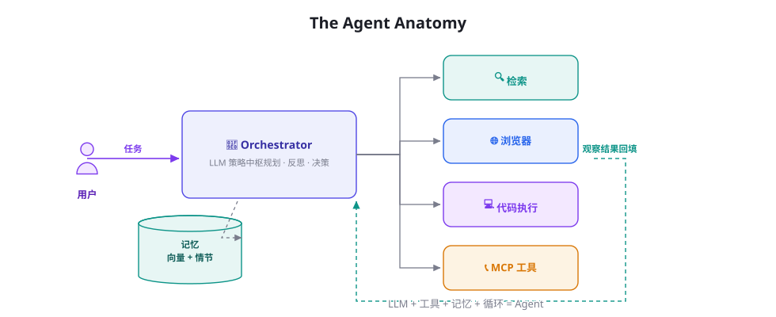

AI Agent Cookbook
一本写给你的人体工程学智能体手册 —— 从第一行 while 循环，到强化学习训练、多智能体系统与生产级架构。113 章 · 全程中文 · 每一章都能落地。

三条学习路径
无论你是刚入门的开发者、要交付产品的工程师，还是推进前沿的研究者，都有一条为你设计的路线。
入门者 · 建立直觉
理解 Agent 是什么、亲手跑通第一个循环。不需要 ML 背景，会 Python 即可出发。
工程师 · 交付产品
机制、框架、评测、安全、可观测性 —— 把「Demo 很惊艳」变成「生产很可靠」。
研究者 · 推进前沿
从 RLHF 到 RLVR，从过程奖励到 Self-Play，配 100 篇论文地图与精读笔记。
这本书有什么不同
不是又一份「入门教程」，而是一本可以陪伴你三年的参考书。
全景知识地图
13 大部分、113 章、4 附录：从 Transformer 原理到 Agent RL，从 Prompt 注入防御到生产架构，一张地图走到底。
80+ 原创图解
每一张架构图、流程图、时间线都以统一视觉语言原创绘制，开源可复用，拒绝截图拼贴。
可运行的代码
200 行手写最小 Agent、8 个完整实战项目、可复现的训练配置 —— 全部代码可以复制就跑。
严谨的文献支撑
每章附真实论文引用（含 arXiv 编号）与延伸阅读；10 篇奠基论文逐篇精读。
安全是一等公民
专设安全篇：威胁模型、间接注入攻防、沙箱与权限、合规治理 —— Agent 上线前必读。
为自学设计
章末小结 + 自测题 + 学习路径图 + 术语表 + 面试题库，全程自学友好。
全书目录
14 个部分 · 113 章 · 4 个附录 · 按学习顺序编排，也可随意跳读。
🧭 导论
为什么是 Agent、如何使用本书、Agent 的历史脉络与心智模型。
🧱 基础篇：LLM 与提示工程
读懂 LLM 的内部、掌握提示工程与 API 工程，为 Agent 打地基。
⚙️ 核心机制篇
Agent Loop、ReAct、工具、规划、记忆、RAG、反思、多 Agent 与人机协同。
- 014什么是 Agent：自主性光谱与感知-决策-行动
- 015Agent Loop：大模型 Agent 的心脏
- 016ReAct：推理与行动的交织范式
- 017工具调用全景：从 Function Calling 到并行编排
- 018规划机制：任务分解、Plan-and-Execute 与树搜索
- 019记忆系统：短期、长期、情景与语义
- 020RAG 从入门到进阶：分块、索引、检索与重排
- 021RAG 进阶：HyDE、Self-RAG、GraphRAG 与 Agentic RAG
- 022反思与自我改进：Reflexion、Self-Refine 与 Critic 模式
- 023上下文工程：Context Engineering 的艺术
- 024多 Agent 系统：拓扑、协作协议与角色分工
- 025人机协同：审批、中断与恢复
🛠️ 工程与框架篇
从 200 行手写 Agent 到 LangGraph、Agents SDK、AutoGen、MCP 协议与低代码平台。
- 026Agent 技术栈总览与选型决策树
- 027从零手写最小 Agent：200 行 Python 的完整实现
- 028LangChain 与 LangGraph 深度实战
- 029OpenAI Agents SDK 与 Responses API
- 030Claude Agent SDK 与 Claude Code 剖析
- 031AutoGen / AG2：群聊式多智能体框架
- 032CrewAI：角色驱动的多 Agent 团队
- 033MetaGPT：软件公司隐喻与 SOP 多智能体
- 034LlamaIndex：数据框架与 Agent 融合
- 035低代码平台：Dify、Coze、n8n 与 Flowise
- 036MCP：Model Context Protocol 详解与生态
- 037Agent 互操作协议：A2A、AG-UI 与开放生态
🏋️ 训练与强化篇
SFT、RLHF、DPO、RLVR、Tool Use 与 Agent RL：让模型真正学会做事。
- 038训练全景图：预训练 → SFT → RLHF → Agent 训练
- 039SFT 指令微调实操：数据构建与 LoRA/QLoRA
- 040RLHF 与 PPO：三阶段详解
- 041DPO 及变体：IPO、KTO、SimPO、ORPO
- 042RLAIF、Constitutional AI 与自我奖励
- 043RLVR：可验证奖励的强化学习与推理范式
- 044工具使用训练：Toolformer、Gorilla 与 ToolRL
- 045Agent RL：WebRL、AgentGym、AgentTuning 与进化式训练
- 046过程奖励与结果奖励：PRM、ORM 与奖励设计
- 047合成数据工程：Self-Instruct、Evol-Instruct 与数据飞轮
- 048蒸馏与小型化：让小模型拥有 Agentic 能力
- 049Self-Play 与持续学习：Agent 的自我进化
📏 评测基准篇
从 SWE-bench 到 OSWorld：Agent 如何被科学地度量和比较。
🛡️ 安全与对齐篇
威胁模型、Prompt Injection、权限沙箱、幻觉治理与合规治理。
👁️ 多模态与具身篇
VLM Agent、GUI/Computer Use、具身智能、游戏 Agent 与科学发现。
🚀 前沿专题篇
Deep Research、Coding Agent、长时程任务、世界模型与 Agent 经济学。
🧪 实战项目篇
八个完整项目 + 生产化部署 + 顶级产品案例拆解。
📐 理论基础篇
MDP/POMDP、In-context RL、搜索与规划理论、BDI 遗产与涌现。
📚 论文库篇
精读 10 篇奠基论文 + 全领域论文地图 + 100 篇前沿清单。
🗃️ 项目与资源库篇
框架横评、50 个必 Star 项目、数据集大全与学习资源。
🎯 面试与速查篇
100+ 道面试题解析、系统设计题、300 条术语表。
附录与速查
参与贡献
本书是开源项目，欢迎以任何形式参与。
纠错与建议
发现技术错误或表述问题，直接提 Issue；每章都有稳定锚点可引用。
新增章节
阅读 CONTRIBUTING.md 与写作规范，一个 PR 一章，CI 会自动检查格式与链接。
翻译与再分发
内容采用 CC BY-SA 4.0 协议，欢迎翻译、改编、教学使用（署名 + 同方式共享）。